伟创业有超过13年的铝合金CNC加工和制造服务的丰富经验。拥有3，4，5轴cnc加工机床66台，数控车床30合，自动车床20,拥有测量实验室，面备有三次元，二次元投影仪等高精度检验仪器,120人一线生产人员日产外观件20000套
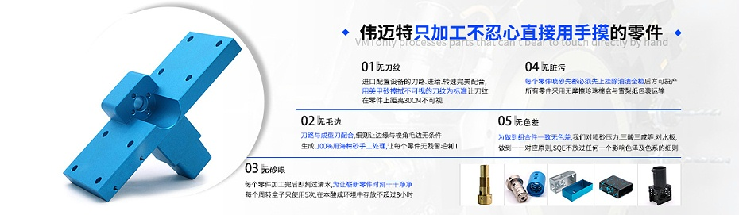

品质管控——15名专职检验团队,保障产品良品率，使产品正常交货,拥有测量实验室配备有三次元，二次元投影仪等高精度检验仪器,
cnc加工交期-——100台cnc加工设备,3天交样,7天小批量交货常规材料备有库存充足,7*24小时生产
降低成本– 免费优化与可制造性优化,通过良品率来降本,样品后量产前异常少,异常响应快。
产品良品率——12道质检流程，层层管控，外观件直通率高达98%.
生产实力——13年铝合金cnc加工厂家，拥有5500平厂房,15600款产品案例加工经验120位一线工作人员
售后服务——及时与客户沟通生产进度，3+1服务准时交货

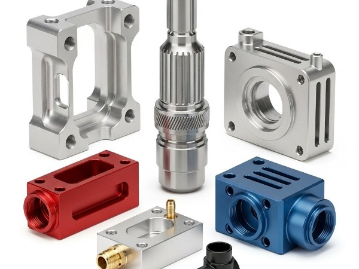
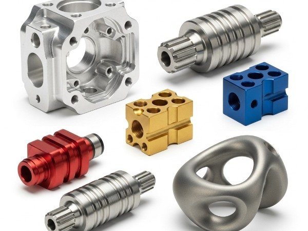
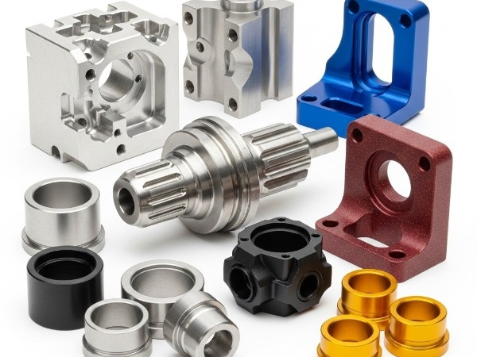
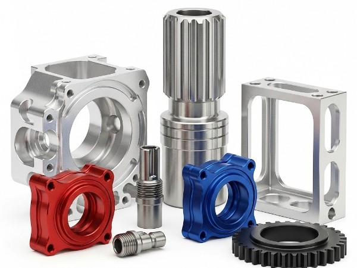
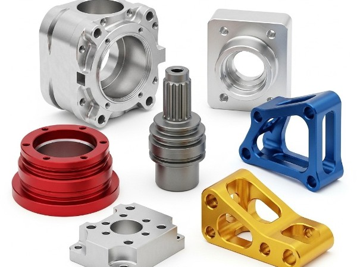

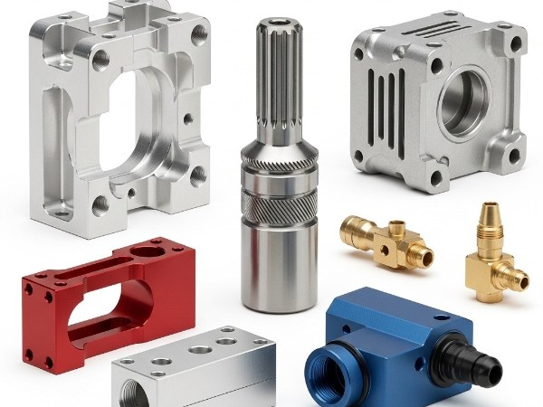
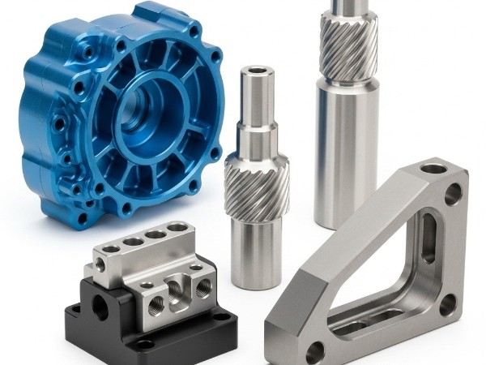
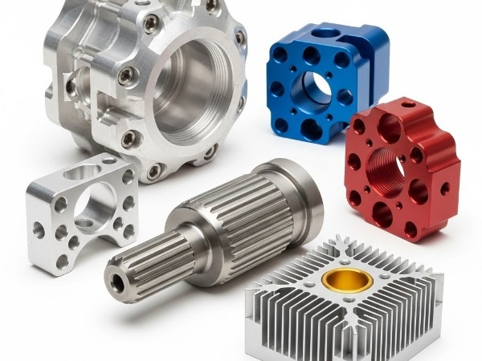
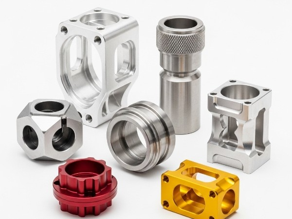
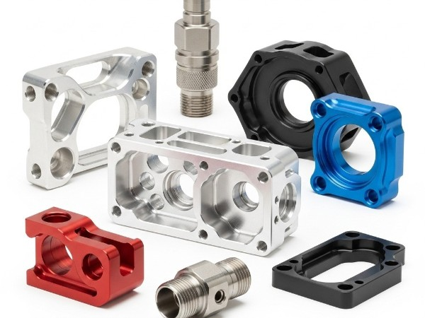
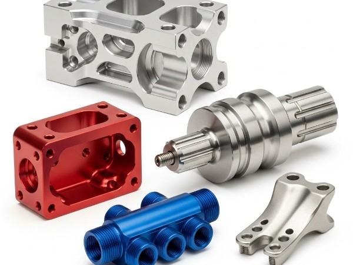
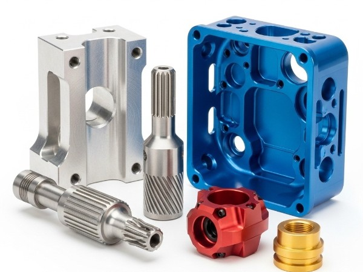